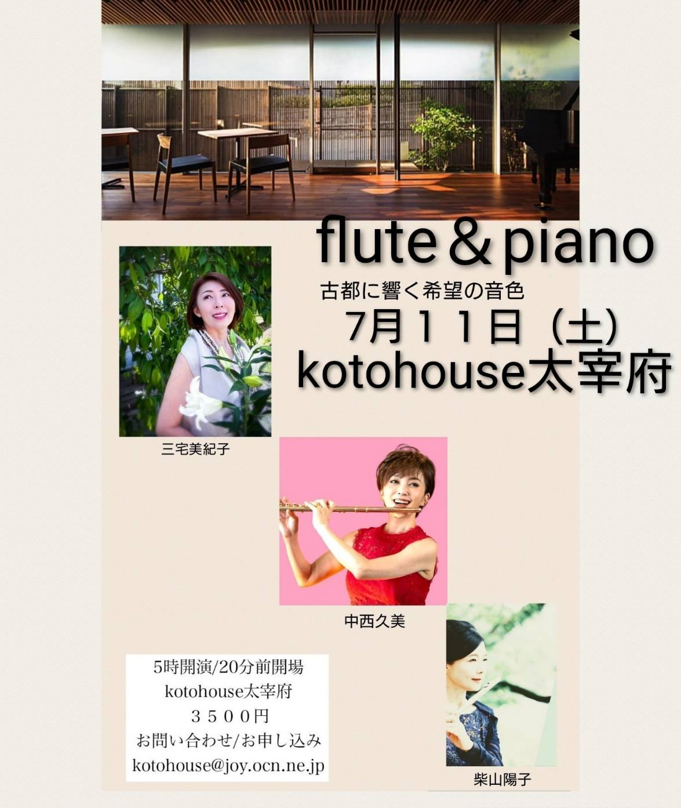

koto house｜太宰府天満宮そばのギャラリー＆コンサートホール
九州の古都、
太宰府天満宮の傍らの
ギャラリー&コンサートホール
SCROLL
今後のイベント


flute & piano
古都に響く希望の音色
三宅美紀子、中西久美、柴山陽子
- 時間
- 開場 4:40pm／開演 5:00pm
- 場所
- koto house 太宰府
- チケット
- 3,500円
- お申し込み
- メールで申し込む →


ABOUT
ご利用案内
アクセス
- 所在地
- 福岡県太宰府市宰府 3-2-25
- 交通
- 西鉄太宰府駅より徒歩4分
- 駐車場
- 駐車場はございません
koto house前の道は一方通行 →
となっておりますのでご注意ください。